HM类型系统
辛德雷-米尔纳类型系统(也称为Damas-Hindley-Milner或HM)是一组类型系统,它们承认有一个可处理的算法可以从非类型化语法确定类型,这是一个偶然的特性。
这是通过一个称为unification(统一)的过程来实现的,在这个过程中,一个结构良好的程序的类型会产生一组约束,当解决这些约束时,总是有一个惟一的主体类型。
最简单的Hindley Milner类型系统由一组非常短的规则定义。
前四个规则描述了我们可以如何判断将每个句法结构(Lam，App，Var，Let)映射到它们的预期类型,我们很快就会详细阐述这些规则。
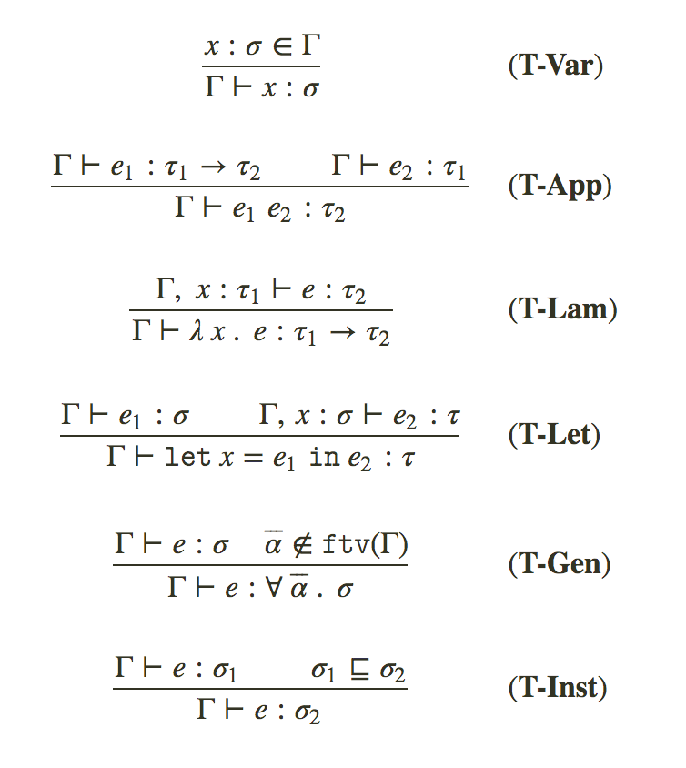
米尔纳的观察是,因为类型规则映射到唯一的语法,我们实际上可以向后运行类型规则,每当我们没有子表达式的已知类型时,我们通过在其位置放置一个新变量,
收集关于其后续类型判断引起的使用限制来进行”猜测”.
这是ML族语言中类型推断的本质,通过生成和解决一种统一(unification)问题,我们可以从语法中唯一地重构类型,算法本身很大程度上只是统一求解器的结构化使用.
然而,完整的类型推断使我们有点束缚,因为虽然推理问题在这种简单的语言和简单的扩展中是易处理的,但几乎所有对语言的重要补充都会破坏在没有注释的情况下推断类型的能力,
或者使推理算法严重复杂化.然而,Hindley-Milner家族在设计领域代表了一个非常有用,富有成效的”甜蜜点”.
语法
我们的第一种类型推断语言的语法实际上将是我们的无类型lambda演算的扩展,包括fixpoint运算符,booleans,integers,let和一些基本的算术运算.1
2
3
4
5
6
7
8
9
10
11
12
13
14
15
16
17
18
19
20
21
22
23
24type Name = String
data Expr
= Var Name
| App Expr Expr
| Lam Name Expr
| Let Name Expr Expr
| Lit Lit
| If Expr Expr Expr
| Fix Expr
| Op Binop Expr Expr
deriving (Show, Eq, Ord)
data Lit
= LInt Integer
| LBool Bool
deriving (Show, Eq, Ord)
data Binop = Add | Sub | Mul | Eql
deriving (Eq, Ord, Show)
data Program = Program [Decl] Expr deriving Eq
type Decl = (String, Expr)
parser是微不足道的,唯一的补充是toplevel let声明(Decl),它们被加入到全局程序中,
所有顶级声明都必须以分号结束,尽管它们可以跨越多行并且忽略空格.例如:1
2
3
4-- SKI combinators
let I x = x;
let K x y = x;
let S f g x = f x (g x);
和之前一样,let rec表达式将根据fixpoint运算符展开,只是语法糖.
多态性
我们将向我们的语言添加一个额外的构造,它将允许我们的语言具有一种新的多态性形式.
多态性是一个术语的属性,它允许同一函数实现同时使用几种不同的类型.
例如,identity函数的多态签名实例映射一个α类型的输入:
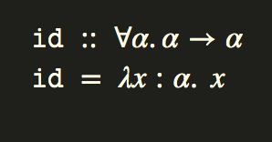
现在不必为每种可能的类型重复函数(即实现idInt,idBool…)
我们的类型系统允许包含在多态类型签名中的任何实例.
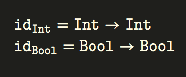
普遍量化的一个相当显著的事实是,关于一类的inhabitants(類型的實例的統稱)的许多属性是由构造保证的,这些就是所谓的free定理.
例如,任何(a, b) -> a类型的(nonpathological)实现必须等同于fst.
一个稍微不那么简单的例子是fmap函数的类型Functor f =>（a -> b）-> f a -> f b
第二个functor法律要求:1
forall f g. fmap f . fmap g = fmap (f . g)
但是,我们不可能为fmap编写一个(nonpathological)函数,该函数具有所需的类型,但没有此属性.我们得到free定理!
类型
我们将使用的类型语言从用于类型化lambda演算的简单类型系统开始.1
2
3
4
5
6
7
8
9
10
11
12newtype TVar = TV String
deriving (Show, Eq, Ord)
data Type
= TVar TVar
| TCon String
| TArr Type Type
deriving (Show, Eq, Ord)
typeInt, typeBool :: Type
typeInt = TCon "Int"
typeBool = TCon "Bool"
Type schemes`model polymorphic types`(样板多态类型)，它们表示量词中绑定的类型变量在封闭的类型中是多态的，可以用与签名一致的任何类型实例化。直观地说明了该函数的实现:1
data Scheme = Forall [TVar] Type
Type schemes(类型模式)将在我们的输入规则中写为σ.
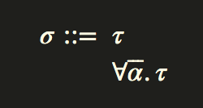
例如:id和const函数将会有以下类型:
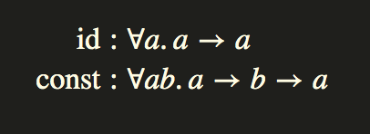
我们现在将我们的类型划分为两个句法类别,单型和多型.
在我们简单的初始语言中,type schemes(类型模式)将始终是top level(顶级)签名的表示,即使没有多态类型变量.
在实现术语中,这意味着在推断后从我们的Infer monad中产生单型时,we will immediately generalize it at the toplevel "closing over" all free type variables in a type scheme.
(我们将立即在类型模式的顶层”关闭所有”自由类型变量中归纳它)
上下文
1 | newtype TypeEnv = TypeEnv (Map.Map Var Scheme) |
两个主要操作是扩展和限定,它从上下文中引入或删除命名数量.
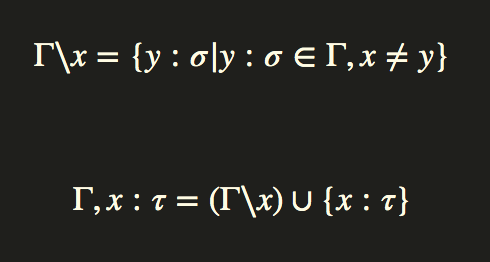
对上下文的操作只是对底层map上的常用Set操作.1
2extend :: TypeEnv -> (Var, Scheme) -> TypeEnv
extend (TypeEnv env) (x, s) = TypeEnv $ Map.insert x s env
Inference Monad(推理)
我们所有的类型推断逻辑都将存在于Infer monad中,它是ExcpetT+State的monad变换器堆栈.允许各种错误报告并有状态地保存新名称.1
type Infer a = ExceptT TypeError (State Unique) a
在monad中运行逻辑会导致类型错误或结果类型模式.1
2
3
4runInfer :: Infer (Subst, Type) -> Either TypeError Scheme
runInfer m = case evalState (runExceptT m) initUnique of
Left err -> Left err
Right res -> Right $ closeOver res
Substitution(替换)
查询表达式的自由变量和对表达式应用替换,这两个操作将执行相当多的操作.
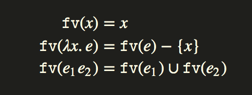
相同的模式适用于类型级别的类型变量.
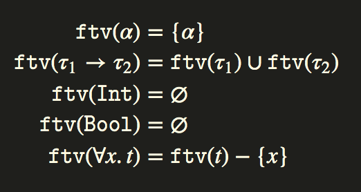
表达式上的替换将替换应用于局部变量，如果匹配，则替换指定的子表达式。在名称捕获的情况下，将引入一个新的变量。
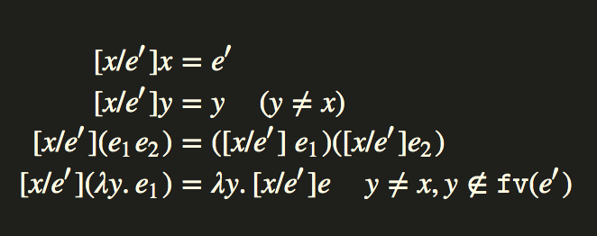
同样，替换也可以应用于类型环境之上的元素。
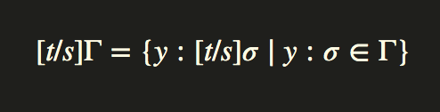
我们在Haskell中的替换实现只是从类型变量到类型的Map.1
type Subst = Map.Map TVar Type
替换的组合(s1 ∘ s2, s1 compose s2)可以简单地编码为基础Map上的操作,重要的是要注意,在我们的实现中,我们选择了替换为left-biased,取决于推理算法的实现,以确保在替换之间不发生冲突.1
2
3
4
5nullSubst :: Subst
nullSubst = Map.empty
compose :: Subst -> Subst -> Subst
s1 `compose` s2 = Map.map (apply s1) s2 `Map.union` s1
Haskell中的实现是通过Substitutable类型类的一系列实现来公开一个apply函数,该函数应用在 指定类型变量的 类型结构上 给出的替换.1
2
3
4
5
6
7
8
9
10
11
12
13
14
15
16
17
18
19
20
21
22
23
24
25class Substitutable a where
apply :: Subst -> a -> a
ftv :: a -> Set.Set TVar
instance Substitutable Type where
apply _ (TCon a) = TCon a
apply s t@(TVar a) = Map.findWithDefault t a s
apply s (t1 `TArr` t2) = apply s t1 `TArr` apply s t2
ftv TCon{} = Set.empty
ftv (TVar a) = Set.singleton a
ftv (t1 `TArr` t2) = ftv t1 `Set.union` ftv t2
instance Substitutable Scheme where
apply s (Forall as t) = Forall as $ apply s' t
where s' = foldr Map.delete s as
ftv (Forall as t) = ftv t `Set.difference` Set.fromList as
instance Substitutable a => Substitutable [a] where
apply = fmap . apply
ftv = foldr (Set.union . ftv) Set.empty
instance Substitutable TypeEnv where
apply s (TypeEnv env) = TypeEnv $ Map.map (apply s) env
ftv (TypeEnv env) = ftv $ Map.elems env
在整个类型规则和替换中,我们需要新的名称.在这个天真的版本中,我们将简单地使用无限的字符串列表,并按照我们在状态monad中保存的索引切入列表的第n个元素,这是最简单的实现,稍后我们将使这种名称生成技术更加健壮.1
2
3
4
5
6
7
8letters :: [String]
letters = [1..] >>= flip replicateM ['a'..'z']
fresh :: Infer Type
fresh = do
s <- get
put s{count = count s + 1}
return $ TVar $ TV (letters !! count s)
创建新变量对于实施推理规则至关重要。 每当我们在某个表达式中遇到第一次使用变量时，我们将创建一个新的类型变量。
Unification(统一)
推理思想的核心是统一的概念,两个表达式e1和e2的统一符是替换s,使得:
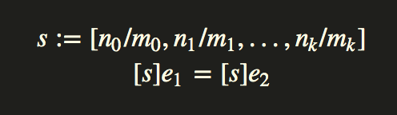
如果在它们之间存在统一的替换集合，则认为两个术语是统一的。 如果替换的应用与所应用的顺序无关，即如果我们总是以相同的正常形式到达而不管所选择的替换顺序如何，则称替换集是汇合的。
我们将采用这种表示法:1
τ ∼ τ′:s
事实上τ,τ'这两种类型是可以通过一个替换s进行统一的,这样:1
[s]τ = [s]τ′
两个相同的项可以用空的统一器轻松地统一:1
c ∼ c : [ ]
我们的小HM语言的统一规则如下:
如果我们想要将类型变量α与类型τ统一起来,我们通常可以用类型替换变量: [α/τ].但是,我们的规则规定了一个前提条件,称为该统一的发生检查: 类型变量α不得在τ中自由出现.如果确实如此.则替换将不是统一.
例如,统一α和α → β的问题.
替换s = [α/α → β]不统一: 我们得到1
2
3[s]α = α → β
-- 和
[s]α → β = (α → β) → β
实际上,无论我们尝试什么替代,[s]α → β总是比[s]α长,所以不存在统一者,唯一的机会是用无限类型替换: [α/(...((α → β) → β)→ ⋯ → β) → β]将是一个统一者，但我们的语言没有这样的类型。
如果由于发生检查(occurs check)而统一失败,我们说统一将给出无限类型。
请注意,如果我们尝试类型检查omega组合器λx.xx，那么统一α → β和α正是我们必须要做的,所以它被发生检查(occurs check)排除了，
正如我们在覆盖无类型lambda演算时所讨论的其他pathological术语一样.1
2occursCheck :: Substitutable a => TVar -> a -> Bool
occursCheck a t = a `Set.member` ftv t
unify函数存在于Infer monad中并产生替换:1
2
3
4
5
6
7
8
9
10
11
12
13
14
15unify :: Type -> Type -> Infer Subst
unify (l `TArr` r) (l' `TArr` r') = do
s1 <- unify l l'
s2 <- unify (apply s1 r) (apply s1 r')
return (s2 `compose` s1)
unify (TVar a) t = bind a t
unify t (TVar a) = bind a t
unify (TCon a) (TCon b) | a == b = return nullSubst
unify t1 t2 = throwError $ UnificationFail t1 t2
bind :: TVar -> Type -> Infer Subst
bind a t | t == TVar a = return nullSubst
| occursCheck a t = throwError $ InfiniteType a t
| otherwise = return $ Map.singleton a t
Generalization and Instantiation (泛化和实例化)
Hindley-Milner的核心是两个基本操作:Generalization泛化: 通过关闭类型方案中的所有自由类型变量,将τ类型转换为σ类型。Instantiation实例化: 通过为当前类型环境中未出现的每个类型变量创建新名称,将σ类型转换为τ类型。
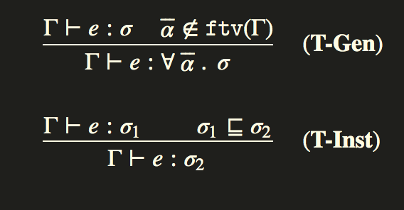
(T-Inst)规则中的⊑运算符表示类型是类型模式(type scheme)的实例.
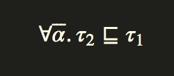⊑符号右边的类型τ1是左边类型模式(σ = 左边)的实例化,如果对于所有的β ∈ 𝚏𝚝𝚟(σ)存在一个替换[s]β = β,则τ1 = [s]τ2,看例子:
1 | ∀a.a → a ⊑ 𝙸𝚗𝚝 → 𝙸𝚗𝚝 |
这些映射非常直观地映射到简单地操作Haskell Set变量对象和新名称供应的代码:1
2
3
4
5
6
7
8
9instantiate :: Scheme -> Infer Type
instantiate (Forall as t) = do
as' <- mapM (const fresh) as
let s = Map.fromList $ zip as as'
return $ apply s t
generalize :: TypeEnv -> Type -> Scheme
generalize env t = Forall as t
where as = Set.toList $ ftv t `Set.difference` ftv env
按照约定,let绑定被尽可能地一般化(generalized).
因此,在下面的定义中,f在绑定的主体上进行了一般化,以便在每次调用f时,都用新的类型变量实例化它.1
2Poly> let f = (\x -> x) in let g = (f True) in f 3
3 : Int
在这个表达式中,f的类型在let定义中生成,并将使用两个不同的签名实例化.
在f的调用位置,它将与Int相统一,另一个与Bool相统一。
相反,在lambda中绑定f将导致类型错误.1
2
3
4
5Poly> (\f -> let g = (f True) in (f 3)) (\x -> x)
Cannot unify types:
Bool
with
Int
这是let generalization(一般化)的本质.
Typing Rules (类型规则)
最后,在所有类型机制到位后,我们可以写下我们简单的小多态lambda演算的类型规则.1
infer :: TypeEnv -> Expr -> Infer (Subst, Type)
infer将局部类型环境和活动表达式映射到部分统一解决方案和中间类型的2元组.通过在每个部分推断的子表达式和局部环境中应用来自统一的部分替换,自下而上遍历AST并且在每个递归级别处求解约束,如果遇到错误,则会在Infer monad中调用throwError,并报告错误:1
2
3
4
5
6
7
8
9
10
11
12
13
14
15
16
17
18
19
20
21
22
23
24
25
26
27
28
29
30
31
32
33
34
35
36
37
38
39
40
41
42
43
44
45
46
47
48infer :: TypeEnv -> Expr -> Infer (Subst, Type)
infer env ex = case ex of
Var x -> lookupEnv env x
Lam x e -> do
tv <- fresh
let env' = env `extend` (x, Forall [] tv)
(s1, t1) <- infer env' e
return (s1, apply s1 tv `TArr` t1)
App e1 e2 -> do
tv <- fresh
(s1, t1) <- infer env e1
(s2, t2) <- infer (apply s1 env) e2
s3 <- unify (apply s2 t1) (TArr t2 tv)
return (s3 `compose` s2 `compose` s1, apply s3 tv)
Let x e1 e2 -> do
(s1, t1) <- infer env e1
let env' = apply s1 env
t' = generalize env' t1
(s2, t2) <- infer (env' `extend` (x, t')) e2
return (s1 `compose` s2, t2)
If cond tr fl -> do
(s1, t1) <- infer env cond
(s2, t2) <- infer env tr
(s3, t3) <- infer env fl
s4 <- unify t1 typeBool
s5 <- unify t2 t3
return (s5 `compose` s4 `compose` s3 `compose` s2 `compose` s1, apply s5 t2)
Fix e1 -> do
(s1, t) <- infer env e1
tv <- fresh
s2 <- unify (TArr tv tv) t
return (s2, apply s1 tv)
Op op e1 e2 -> do
(s1, t1) <- infer env e1
(s2, t2) <- infer env e2
tv <- fresh
s3 <- unify (TArr t1 (TArr t2 tv)) (ops Map.! op)
return (s1 `compose` s2 `compose` s3, apply s3 tv)
Lit (LInt _) -> return (nullSubst, typeInt)
Lit (LBool _) -> return (nullSubst, typeBool)
让我们浏览每个规则派生，看看它如何转换为代码:
T-Var
T-Var规则，只需从typing变换上下文中提取变量的类型即可.1
Var x -> lookupEnv env x
函数lookupVar在typing环境中查找局部变量引用,如果找到它,则实例化一个新副本.1
2
3
4
5
6lookupEnv :: TypeEnv -> Var -> Infer (Subst, Type)
lookupEnv (TypeEnv env) x = do
case Map.lookup x env of
Nothing -> throwError $ UnboundVariable (show x)
Just s -> do t <- instantiate s
return (nullSubst, t)
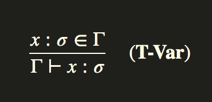
T-Lam
对于lambdas,由lambda绑定的变量本地作用于typing环境,然后使用此作用域推断表达式的主体.
输出类型是一个新类型变量,并与生成的推断类型统一.1
2
3
4
5Lam x e -> do
tv <- fresh
let env' = env `extend` (x, Forall [] tv)
(s1, t1) <- infer env' e
return (s1, apply s1 tv `TArr` t1)
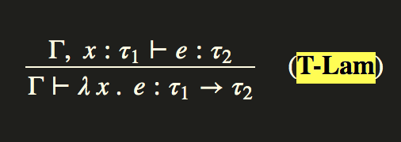
T-App
对于应用程序,第一个参数必须是lambda表达式或返回lambda表达式,因此要知道它必须是t1 -> t2的形式,但除了两个值的汇合外,不确定输出类型。
我们推断两种类型,
将第一个参数中的约束应用于第二推断类型的结果,然后使用整个应用程序表达式的例外形式(excepted form)统一这两个类型。1
2
3
4
5
6App e1 e2 -> do
tv <- fresh
(s1, t1) <- infer env e1
(s2, t2) <- infer (apply s1 env) e2
s3 <- unify (apply s2 t1) (TArr t2 tv)
return (s3 `compose` s2 `compose` s1, apply s3 tv)
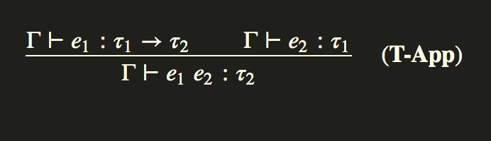
T-Let
如前所述,let将会generalized(一般化),因此我们将为let表达式的主体创建一个本地typing类型化环境,并添加一般化推断类型的let绑定值到主体的typing环境中.1
2
3
4
5
6Let x e1 e2 -> do
(s1, t1) <- infer env e1
let env' = apply s1 env
t' = generalize env' t1
(s2, t2) <- infer (env' `extend` (x, t')) e2
return (s1 `compose` s2, t2)
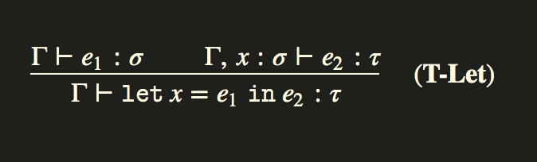
T-BinOp
有几个内建操作,我们到目前为止还没有提到,因为类型规则很简单,我们只需统一这个操作的预设置类型签名.1
2
3
4
5
6
7
8
9
10
11
12
13
14Op op e1 e2 -> do
(s1, t1) <- infer env e1
(s2, t2) <- infer env e2
tv <- fresh
s3 <- unify (TArr t1 (TArr t2 tv)) (ops Map.! op)
return (s1 `compose` s2 `compose` s3, apply s3 tv)
ops :: Map.Map Binop Type
ops = Map.fromList [
(Add, (typeInt `TArr` (typeInt `TArr` typeInt)))
, (Mul, (typeInt `TArr` (typeInt `TArr` typeInt)))
, (Sub, (typeInt `TArr` (typeInt `TArr` typeInt)))
, (Eql, (typeInt `TArr` (typeInt `TArr` typeBool)))
]
Literals
literal整数和boolean类型的类型通常是它们各自的类型.1
2
3
4(+) :: 𝙸𝚗𝚝 → 𝙸𝚗𝚝 → 𝙸𝚗𝚝
(×) :: 𝙸𝚗𝚝 → 𝙸𝚗𝚝 → 𝙸𝚗𝚝
(−) :: 𝙸𝚗𝚝 → 𝙸𝚗𝚝 → 𝙸𝚗𝚝
(=) :: 𝙸𝚗𝚝 → 𝙸𝚗𝚝 → 𝙱𝚘𝚘𝚕
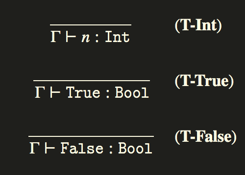
Constraint Generation (约束生成)
Hindley Milner的先前实现很简单,但具有混合两个独立过程的奇怪特性: constraint solving(约束求解器)和traversal(遍历).让我们讨论不执行此操作的推理算法的另一种实现.
在约束生成方法中,约束是通过自下而上遍历生成的,添加到有序容器中,规范化,求解,然后可能在类型化AST上进行后置替换.这将是我们将从这里使用的方法,
虽然与on-line solver之间存在等价,但使用单独的约束求解器变得更容易管理,因为我们的类型系统变得更复杂,我们开始构建语言.
现在我们的推理monad变成了RWST(Reader-Writer-State转换器)+Either(处理类型错误).推理状态保持不变,只是提供新鲜的名称.1
2
3
4
5
6
7
8
9
10
11-- | Inference monad
type Infer a = (RWST
Env -- Typing environment
[Constraint] -- Generated constraints
InferState -- Inference state
(Except -- Inference errors
TypeError)
a) -- Result
-- | Inference state
data InferState = InferState { count :: Int }
我们将只收集Writer中的unifier并使用uni函数发出它们,而不是在每个遍历级别统一类型变量.1
2
3-- | Unify two types
uni :: Type -> Type -> Infer ()
uni t1 t2 = tell [(t1, t2)]
由于typing输入环境存储在Reader monad中,我们可以使用local来为typing环境创建一个本地范围的附加组件.这对于typing绑定器很方便.1
2
3
4
5-- | Extend type environment
inEnv :: (Name, Scheme) -> Infer a -> Infer a
inEnv (x, sc) m = do
let scope e = (remove e x) `extend` (x, sc)
local scope m
Typing
这些类型规则是相同的,只是现在我们可以用一种不需要线程处理太多状态的更少噪音的方式来编写它们.
所有的细节都被隐藏起来,并被编码在特定的组合器中,以一种让我们专注于领域逻辑的方式操纵我们的Infer monad的状态。1
2
3
4
5
6
7
8
9
10
11
12
13
14
15
16
17
18
19
20
21
22
23
24
25
26
27
28
29
30
31
32
33
34
35
36
37
38
39
40
41
42
43
44
45
46
47
48infer :: Expr -> Infer Type
infer expr = case expr of
Lit (LInt _) -> return $ typeInt
Lit (LBool _) -> return $ typeBool
Var x -> lookupEnv x
Lam x e -> do
tv <- fresh
t <- inEnv (x, Forall [] tv) (infer e)
return (tv `TArr` t)
App e1 e2 -> do
t1 <- infer e1
t2 <- infer e2
tv <- fresh
uni t1 (t2 `TArr` tv)
return tv
Let x e1 e2 -> do
env <- ask
t1 <- infer e1
let sc = generalize env t1
t2 <- inEnv (x, sc) (infer e2)
return t2
Fix e1 -> do
t1 <- infer e1
tv <- fresh
uni (tv `TArr` tv) t1
return tv
Op op e1 e2 -> do
t1 <- infer e1
t2 <- infer e2
tv <- fresh
let u1 = t1 `TArr` (t2 `TArr` tv)
u2 = ops Map.! op
uni u1 u2
return tv
If cond tr fl -> do
t1 <- infer cond
t2 <- infer tr
t3 <- infer fl
uni t1 typeBool
uni t2 t3
return t2
Constraint Solver (约束解决器)
Infer monad的Writer层包含从推理传递发出的生成的约束集.
一旦推断完成,我们就会得到一个结果类型签名,其中包含无意义的唯一新变量和一组约束,我们必须解决这些约束以将类型细化为其主要类型.
约束由一个单独的Solve monad解决,该monad包含Unifier(最常见的统一)解决方案,当应用于生成的签名时,它将产生解决方案.1
2
3
4
5
6type Constraint = (Type, Type)
type Unifier = (Subst, [Constraint])
-- | Constraint solver monad
type Solve a = StateT Unifier (ExceptT TypeError Identity) a
统一逻辑也与以前相同,除了它现在脱离推理独立编写,并将其部分状态存储在Solve monad的状态层内.1
2
3
4
5
6
7
8
9
10
11
12
13
14unifies :: Type -> Type -> Solve Unifier
unifies t1 t2 | t1 == t2 = return emptyUnifer
unifies (TVar v) t = v `bind` t
unifies t (TVar v) = v `bind` t
unifies (TArr t1 t2) (TArr t3 t4) = unifyMany [t1, t2] [t3, t4]
unifies t1 t2 = throwError $ UnificationFail t1 t2
unifyMany :: [Type] -> [Type] -> Solve Unifier
unifyMany [] [] = return emptyUnifer
unifyMany (t1 : ts1) (t2 : ts2) =
do (su1,cs1) <- unifies t1 t2
(su2,cs2) <- unifyMany (apply su1 ts1) (apply su1 ts2)
return (su2 `compose` su1, cs1 ++ cs2)
unifyMany t1 t2 = throwError $ UnificationMismatch t1 t2
1 | The solver function simply iterates over the set of constraints, composing them and applying the resulting constraint solution over the intermediate solution eventually converting on the most general unifier which yields the final substitution which when applied over the inferred type signature, yields the principal type solution for the expression. |
求解器函数简单地迭代约束集,组合它们并将结果约束解决方案应用于中间解决方案,最终转换为最通用的统一,产生最终替换,当应用于推断类型签名时,为表达式产生主要类型解决方案.
1 | -- Unification solver |
这是一个更加优雅的解决方案，而不是在同一个传递中混合推理和求解，并且很好地适应了我们将在后面的章节中讨论的类型化核心形式的生成。
Worked Examples
让我们来看两个推理如何适用于简单函数的例子.
例子1
考虑:1
\x y z -> x + y + z
infer函数生成的类型只包含每个参数和返回类型的新变量.1
a -> b -> c -> e
当我们遍历两个加法运算时，发出由T-BinOp引起的约束.1
21. a -> b -> d ~ Int -> Int -> Int
2. d -> c -> e ~ Int -> Int -> Int
这里d是中间项x + y的类型.通过应用Uni-Arrow,我们可以推导出以下一组替换.1
2
3
4
51. a ~ Int
2. b ~ Int
3. c ~ Int
4. d ~ Int
5. e ~ Int
将此解决方案替换回类型会产生推断类型:1
Int -> Int -> Int -> Int
例子2
1 | compose f g x = f (g x) |
推断函数生成的类型仅包含唯一的新变量.1
a -> b -> c -> e
由两个T-App规则引起的我们得到以下约束:1
21. b ~ c -> d
2. a ~ d -> e
这里d是(g x)的类型,约束已经是规范形式,通过应用Uni-VarLeft两次,我们得到以下一组替换:1
21. b ~ c -> d
2. a ~ d -> e
所以我们得到这种类型:1
compose :: forall c d e. (d -> e) -> (c -> d) -> c -> e
如果需要，我们可以按字母顺序重命名变量以获得:1
compose :: forall a b c. (a -> b) -> (c -> a) -> c -> b
Interpreter
我们的求值程序将直接在语法上运行，并将结果计算为Value类型.1
2
3
4data Value
= VInt Integer
| VBool Bool
| VClosure String Expr TermEnv
解释器设置为Identity monad,后面它将成为一个更复杂的monad,但现在它很简单.值(value)环境将显式地线程化,并且每当创建闭包时,我们只需在闭包中存储本地环境的副本.1
2type TermEnv = Map.Map String Value
type Interpreter t = Identity t
我们的计算逻辑是上一章实现的lambda演算求值器的扩展.
然而，您可能会注意到在整个评估过程中使用了许多不完整的模式.
不过不要害怕,我们的程序评估不会”出错”.
这些模式中的每一个都代表了我们的类型系统保证永远不会发生的一种状态.
例如，如果我们的程序没有在作用域中引用每个变量,那么它将永远不会达到开始时的求值,并且将在类型检查器中被拒绝,我们在这里使用不完整的模式在道义上是正确的!1
2
3
4
5
6
7
8
9
10
11
12
13
14
15
16
17
18
19
20
21
22
23
24
25
26
27
28
29
30
31
32
33
34
35
36
37
38
39
40
41
42eval :: TermEnv -> Expr -> Interpreter Value
eval env expr = case expr of
Lit (LInt k) -> return $ VInt k
Lit (LBool k) -> return $ VBool k
Var x -> do
let Just v = Map.lookup x env
return v
Op op a b -> do
VInt a' <- eval env a
VInt b' <- eval env b
return $ (binop op) a' b'
Lam x body ->
return (VClosure x body env)
App fun arg -> do
VClosure x body clo <- eval env fun
argv <- eval env arg
let nenv = Map.insert x argv clo
eval nenv body
Let x e body -> do
e' <- eval env e
let nenv = Map.insert x e' env
eval nenv body
If cond tr fl -> do
VBool br <- eval env cond
if br == True
then eval env tr
else eval env fl
Fix e -> do
eval env (App e (Fix e))
binop :: Binop -> Integer -> Integer -> Value
binop Add a b = VInt $ a + b
binop Mul a b = VInt $ a * b
binop Sub a b = VInt $ a - b
binop Eql a b = VBool $ a == b
Interactive Shell
我们的语言现在已经成长为我们之前使用过的小型shell,现在我们需要更强大的东西来保持我们的交互式解释器的逻辑.1
2
3
4
5
6
7
8
9
10
11
12
13
14
15data IState = IState
{ tyctx :: TypeEnv -- Type environment
, tmctx :: TermEnv -- Value environment
}
initState :: IState
initState = IState emptyTyenv emptyTmenv
type Repl a = HaskelineT (StateT IState IO) a
hoistErr :: Show e => Either e a -> Repl a
hoistErr (Right val) = return val
hoistErr (Left err) = do
liftIO $ print err
abort
我们的语言可以由GHC编译成独立的二进制文件:1
2
3$ ghc --make Main.hs -o poly
$ ./poly
Poly>
在我们程序的顶部，我们将查看命令选项并允许三种命令变体:1
2
3$ poly # launch shell
$ poly input.ml # launch shell with 'input.ml' loaded
$ poly test input.ml # dump test for 'input.ml' to stdout
1 | main :: IO () |
shell命令需要一个pre动作,该动作在shell启动之前运行,逻辑简单地将我们的Repl monad评估为IO并从main函数运行它.1
2
3
4shell :: Repl a -> IO ()
shell pre
= flip evalStateT initState
$ evalRepl "Poly> " cmd options completer pre
cmd驱动程序是我们程序的主要入口点,每次用户输入一行输入时都会执行它,第一个参数是用户输入行.1
2cmd :: String -> Repl ()
cmd source = exec True (L.pack source)
然后，我们的语言的核心是exec函数，它导入所有编译器传递的信息，然后按顺序线程化输入和输出，最终生成一个结果类型环境和程序的评估结果。它们被monoidally连接到解释器的状态中，然后循环产生下一组输入.1
2
3
4
5
6
7
8
9
10
11
12
13
14
15
16
17
18exec :: Bool -> L.Text -> Repl ()
exec update source = do
-- Get the current interpreter state
st <- get
-- Parser ( returns AST )
mod <- hoistErr $ parseModule "<stdin>" source
-- Type Inference ( returns Typing Environment )
tyctx' <- hoistErr $ inferTop (tyctx st) mod
-- Create the new environment
let st' = st { tmctx = foldl' evalDef (tmctx st) mod
, tyctx = tyctx' <> (tyctx st)
}
-- Update the interpreter state
when update (put st')
Repline还支持添加特定的套接字输入集，以便将它们映射到编译器中的内置命令。我们将实现其中三个。1
2
3
4
5Command Action
:browse Browse the type signatures for a program
:load <file> Load a program from file
:type Show the type of an expression
:quit Exit interpreter
它们的实现大多很简单。1
2
3
4
5
6
7
8
9
10
11
12
13
14
15
16
17
18
19
20
21
22
23
24
25
26
27
28
29
30
31
32options :: [(String, [String] -> Repl ())]
options = [
("load" , load)
, ("browse" , browse)
, ("quit" , quit)
, ("type" , Main.typeof)
]
-- :browse command
browse :: [String] -> Repl ()
browse _ = do
st <- get
liftIO $ mapM_ putStrLn $ ppenv (tyctx st)
-- :load command
load :: [String] -> Repl ()
load args = do
contents <- liftIO $ L.readFile (unwords args)
exec True contents
-- :type command
typeof :: [String] -> Repl ()
typeof args = do
st <- get
let arg = unwords args
case Infer.typeof (tyctx st) arg of
Just val -> liftIO $ putStrLn $ ppsignature (arg, val)
Nothing -> exec False (L.pack arg)
-- :quit command
quit :: a -> Repl ()
quit _ = liftIO $ exitSuccess
最后，shell的tab补全将使用解释器的类型环境key在一组本地定义的变量上完成。Repline支持基于前缀的tab完成，其中将使用当前命令的前缀来确定要执行哪些tab完成。
在我们以command:load开头的情况下，我们将直接在当前工作的文件名上tab完成。1
2
3
4
5
6
7
8
9
10
11
12
13
14
15
16completer :: CompleterStyle (StateT IState IO)
completer = Prefix (wordCompleter comp) defaultMatcher
-- Prefix tab completer
defaultMatcher :: MonadIO m => [(String, CompletionFunc m)]
defaultMatcher = [
(":load" , fileCompleter)
]
-- Default tab completer
comp :: (Monad m, MonadState IState m) => WordCompleter m
comp n = do
let cmds = [":load", ":browse", ":quit", ":type"]
TypeEnv ctx <- gets tyctx
let defs = Map.keys ctx
return $ filter (isPrefixOf n) (cmds ++ defs)
Observations (意见)
我们有它，我们的第一个小型推断语言！
通过运行ghci Main.hs加载poly解释器并调用main函数。1
2
3
4$ ghci Main.hs
λ: main
Poly> :load test.ml
Poly> :browse
通过在程序的toplevel声明一些函数来尝试一些简单的例子。我们可以使用:type命令以交互方式查询表达式的类型，该命令实际上只是在管道中途运行表达式并在类型检查后停止。1
2
3
4
5
6
7
8
9
10
11
12Poly> let id x = x
Poly> let const x y = x
Poly> let twice x = x + x
Poly> :type id
id : forall a. a -> a
Poly> :type const
const : forall a b. a -> b -> a
Poly> :type twice
twice : Int -> Int
注意几个重要的事实。
我们的类型检查器现在将在解释之前将我们的拒绝程序与范围错误相关联。1
2Poly> \x -> y
Not in scope: "y"
此外，那些类型不太好的程序现在也会被直接拒绝.1
2
3
4
5Poly> 1 + True
Cannot unify types:
Bool
with
Int
omega组合子将无法通过occurs检查:1
2Poly> \x -> x x
Cannot construct the the infinite type: a = a -> b
test.ml文件提供了对小解释器的各种测试. 例如,fact和fib函数都使用fixpoint来计算Fibonacci数或阶乘。1
2
3
4
5
6
7
8
9
10
11
12
13
14
15
16
17
18
19let fact = fix (\fact -> \n ->
if (n == 0)
then 1
else (n * (fact (n-1))));
let rec fib n =
if (n == 0)
then 0
else if (n==1)
then 1
else ((fib (n-1)) + (fib (n-2)));
Poly> :type fact
fact : Int -> Int
Poly> fact 5
120
Poly> fib 16
610